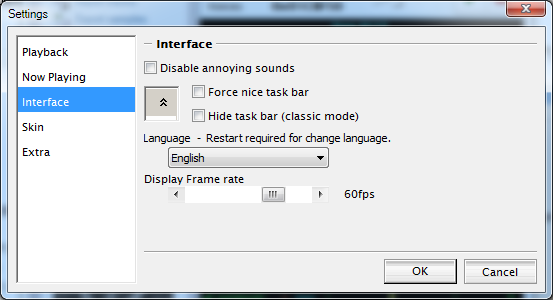
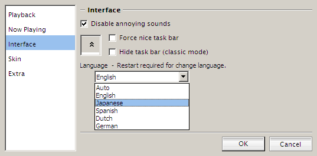
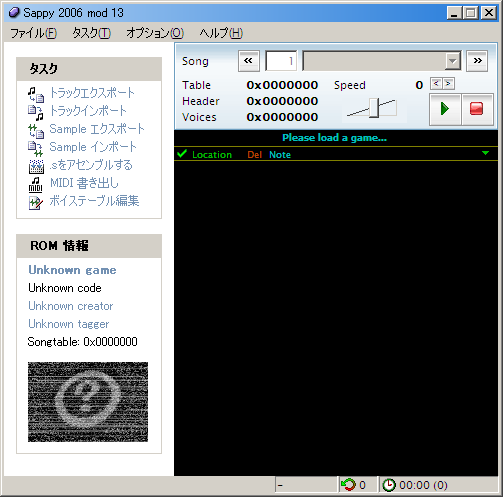
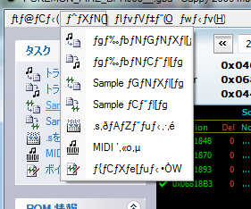

Mod 13 よりプルダウンメニューの Options → Settings 内 Interface メニューに新規の項目を追加しています。
Type of play algorithm の項目はPlaybackメニューへ移動しました。

Language

・Japanese(日本語) に設定した場合

注意点
環境によってはプルダウンメニューが文字化けることがあるようです。
現在のところ対応方法がわからない状態のため、
申しわけありませんが、文字化けしたまま使うか、英語(English)設定でご使用ください。

Display Frame rate limit
1秒間に何回画面更新するか(最大描画フレームレート)の設定です。
フレームレートを上げるとCPU負荷が上がりますが、表示はなめらかになります。
フレームレートを下げるとCPU負荷は下がりますが、表示が雑になります。
デフォルトは 60fps です。